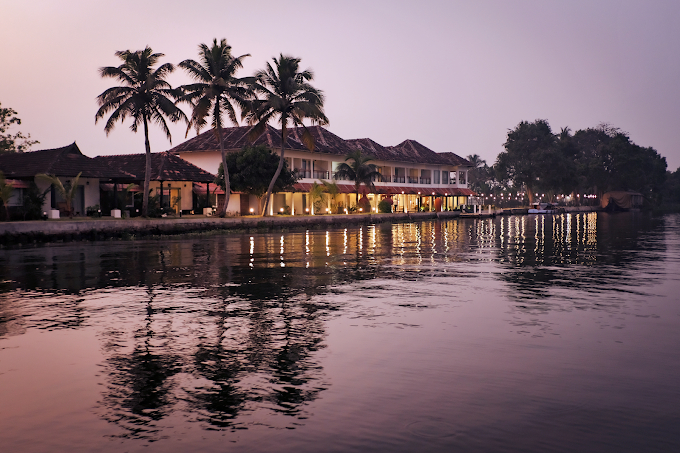

Alleppey · Backwaters
Vedic Village Retreat
A serene private-island retreat surrounded by Kerala’s backwaters and lush natural landscapes, offering an intimate escape with thoughtfully designed accommodations, wellness experiences, and peaceful waterfront settings away from the bustle of everyday life.
Contact for Best RatesEnquire →